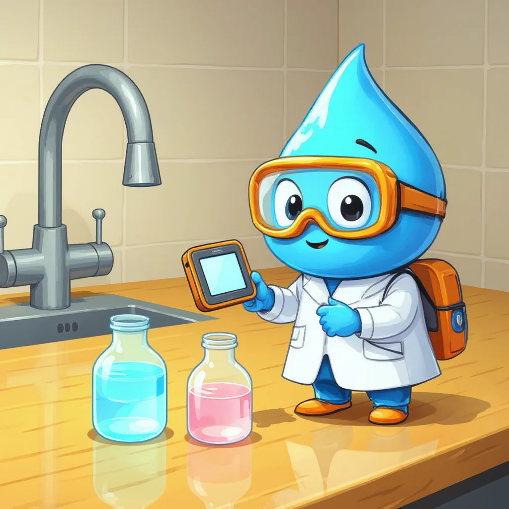

Sección 5 · Parámetro de la norma
Cloro residual libre
El guardián que viaja con el agua.
¿Qué es el cloro residual?
Para empezar, el cloro se agrega en las plantas de tratamiento para matar los microbios del agua, igual que el jabón elimina los gérmenes de las manos. Sin embargo, no basta con agregarlo en la planta: debe quedar un poco de cloro en el agua hasta que llega a la llave, porque el camino por las tuberías es largo. Ese sobrante se llama cloro residual libre y funciona como un guardián que viaja con el agua.

Por eso, la Resolución 2115 de 2007 pide que el agua de la llave tenga entre 0,3 y 2,0 miligramos de cloro residual libre por litro. Con menos de 0,3, los microbios podrían sobrevivir; con más de 2,0, el agua tendría un sabor y un olor fuertes. Además, se mide fácilmente con el método DPD: un reactivo que tiñe el agua de rosado, más intenso cuanto más cloro hay.
| Unidad | Método estándar | Qué dice la norma |
|---|---|---|
| mg Cl₂/L | Colorimétrico DPD (SM 4500-Cl G) | Resolución 2115 de 2007: entre 0,3 y 2,0 mg/L en cualquier punto de la red. |
Laboratorio virtual: medir el cloro
Sigue los pasos con el botón azul.
Calculadora de cloro para un tanque
Los productos comerciales traen cloro diluido; por eso, la cantidad real del producto depende de su concentración y de la etiqueta.
Mini-reto
En la llave se mide 0,1 mg/L de cloro residual. El rango de la norma es de 0,3 a 2,0. ¿Cumple?